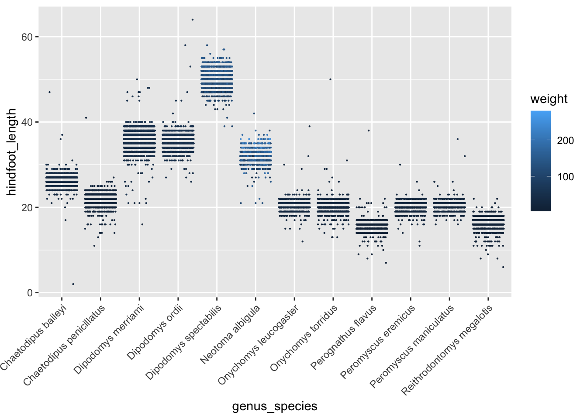
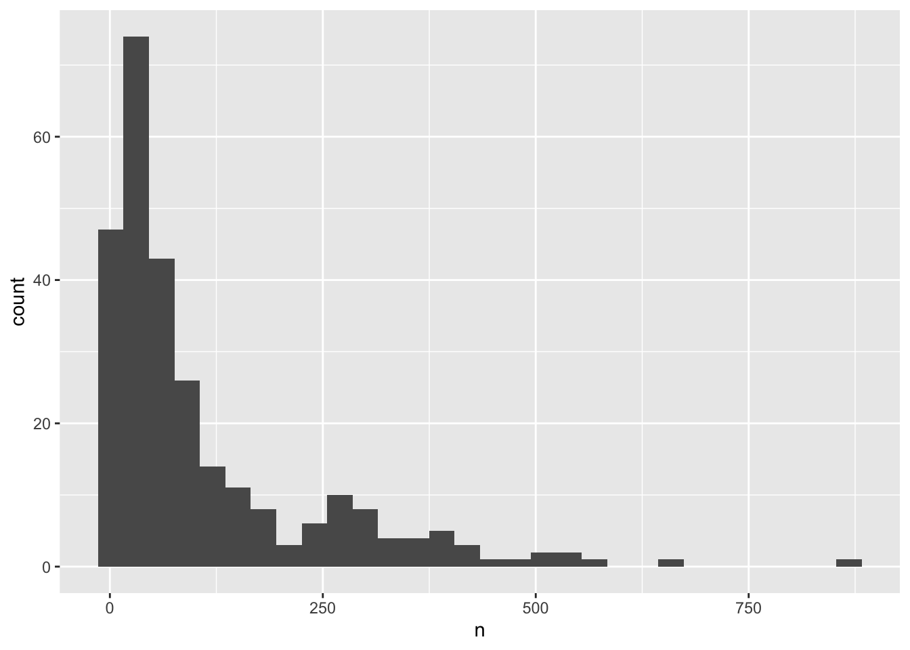
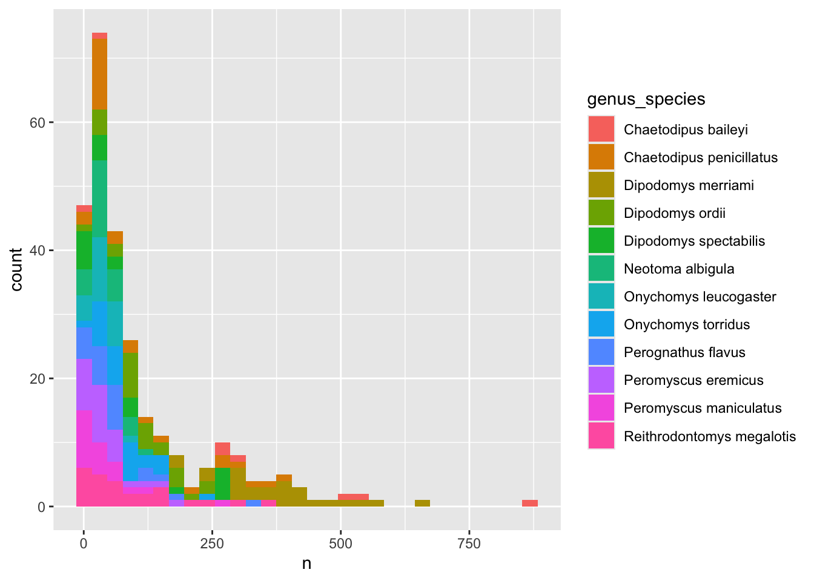
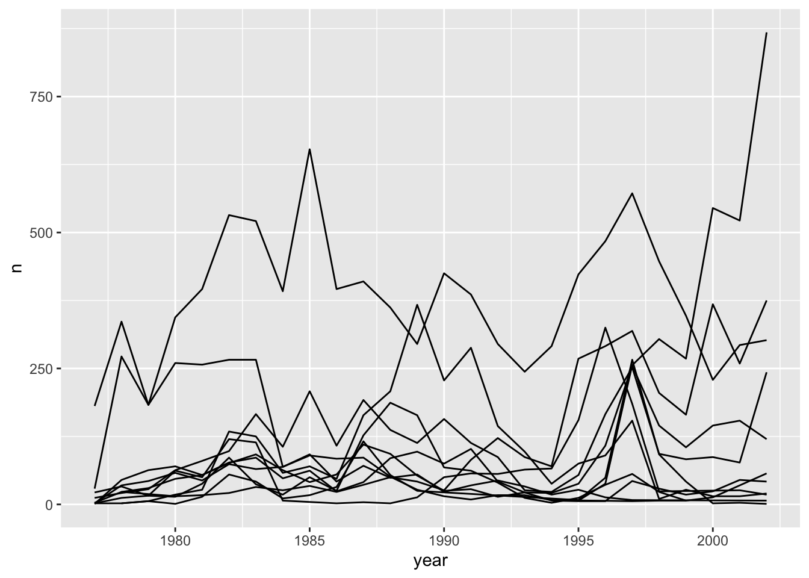
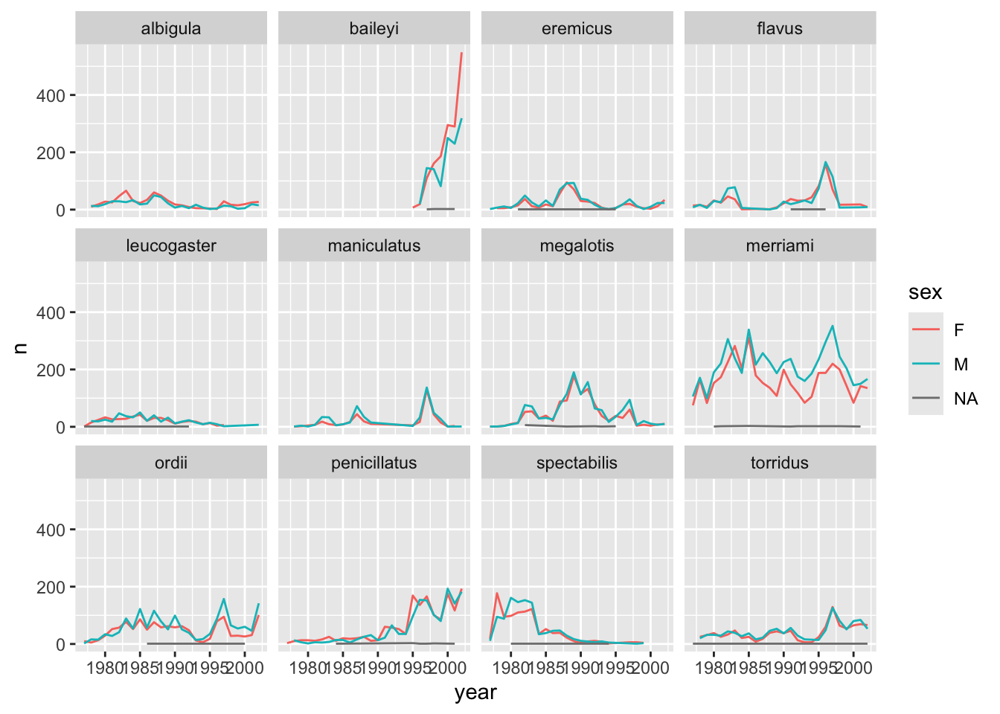
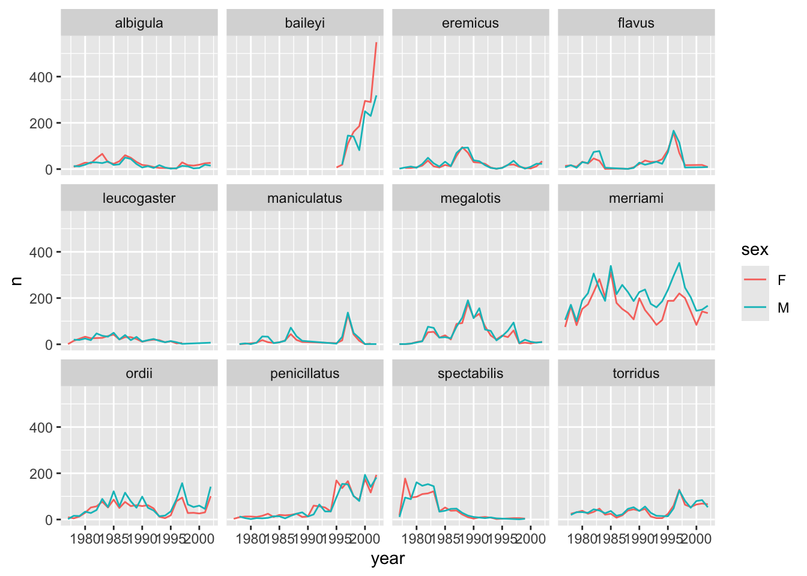

5 Lecture 5: Advanced data manipulation & visualization
5.1 Lesson preamble
5.1.1 Learning Objectives
Learn to make histograms, line plots, and reference lines using
ggplotUnderstand and apply faceting in
ggplotLearn to switch between long and wide format data using
pivot_longerandpivot_widerFormat plots to be more readable
5.2 Review
We’ll be continuing to work for one more lecture on the rich dataset from the Portal Project, which is a 30+ year study of a Chihuahuan desert ecosystem near Portal, Arizona, USA. The dataset we’re working with contains observations of animals found at the study site, which was subdivided into plots which underwent controlled environmental manipulation in some years.
We’ll make sure the tidyverse package is loaded and then read the data in again
Note: make sure to clear your environment before starting a new class
library(tidyverse)── Attaching core tidyverse packages ──────────────────────── tidyverse 2.0.0 ──
✔ dplyr 1.1.4 ✔ readr 2.1.6
✔ forcats 1.0.1 ✔ stringr 1.6.0
✔ ggplot2 4.0.1 ✔ tibble 3.3.0
✔ lubridate 1.9.4 ✔ tidyr 1.3.2
✔ purrr 1.2.0
── Conflicts ────────────────────────────────────────── tidyverse_conflicts() ──
✖ dplyr::filter() masks stats::filter()
✖ dplyr::lag() masks stats::lag()
ℹ Use the conflicted package (<http://conflicted.r-lib.org/>) to force all conflicts to become errors# If you didn't download and save the data locally last time
# download.file("https://ndownloader.figshare.com/files/2292169", "data/portal_data.csv")
surveys <- readr::read_csv('data/portal_data.csv')Rows: 34786 Columns: 13
── Column specification ────────────────────────────────────────────────────────
Delimiter: ","
chr (6): species_id, sex, genus, species, taxa, plot_type
dbl (7): record_id, month, day, year, plot_id, hindfoot_length, weight
ℹ Use `spec()` to retrieve the full column specification for this data.
ℹ Specify the column types or set `show_col_types = FALSE` to quiet this message.surveys# A tibble: 34,786 × 13
record_id month day year plot_id species_id sex hindfoot_length weight
<dbl> <dbl> <dbl> <dbl> <dbl> <chr> <chr> <dbl> <dbl>
1 1 7 16 1977 2 NL M 32 NA
2 72 8 19 1977 2 NL M 31 NA
3 224 9 13 1977 2 NL <NA> NA NA
4 266 10 16 1977 2 NL <NA> NA NA
5 349 11 12 1977 2 NL <NA> NA NA
6 363 11 12 1977 2 NL <NA> NA NA
7 435 12 10 1977 2 NL <NA> NA NA
8 506 1 8 1978 2 NL <NA> NA NA
9 588 2 18 1978 2 NL M NA 218
10 661 3 11 1978 2 NL <NA> NA NA
# ℹ 34,776 more rows
# ℹ 4 more variables: genus <chr>, species <chr>, taxa <chr>, plot_type <chr>For each animal captured, the weight and hindfoot length were measured, and we investigated the relationship between the two variables (after removing missing data) using a scatterplot and found strong clustering by species
surveys_abun_species <- surveys %>%
filter(!is.na(hindfoot_length) & !is.na(weight)) %>%
group_by(species) %>%
mutate(n = n()) %>% # add count value to each row
filter(n > 800) %>%
select(-n) %>%
mutate(genus_species = paste(genus,species))
surveys_abun_species %>%
ggplot(aes(x = weight, y = hindfoot_length, colour = genus_species)) +
geom_point(alpha = 0.2)
Looking at the same variables a different way,
surveys_abun_species %>%
ggplot(aes(x = genus_species, y = hindfoot_length, colour = weight)) +
geom_jitter(size = 0.1, height = 0, width = 0.4) +
theme(axis.text.x = element_text(angle = 45,vjust=1, hjust=1))
5.3 More plot types
In this section, we’ll explore a few more types of plots we can make in ggplot.
Let’s calculate number of counts per year for each species. First, we need to group the data and count records within each group:
surveys_abun_species %>%
group_by(year, genus_species) %>%
tally() %>%
arrange(desc(n)) # Adding arrange just to compare with histogram# A tibble: 275 × 3
# Groups: year [26]
year genus_species n
<dbl> <chr> <int>
1 2002 Chaetodipus baileyi 868
2 1985 Dipodomys merriami 653
3 1997 Dipodomys merriami 572
4 2000 Chaetodipus baileyi 545
5 1982 Dipodomys merriami 532
6 2001 Chaetodipus baileyi 522
7 1983 Dipodomys merriami 521
8 1996 Dipodomys merriami 484
9 1998 Dipodomys merriami 447
10 1990 Dipodomys merriami 425
# ℹ 265 more rowsBefore doing any complex analysis, it’s important to understand how much data there is. Are there years where very few animals of a given species were observed? The best way to look at this sort of count data is with a histogram.
To create a histogram, we can assign this table to a variable, and then pass that variable to ggplot().
yearly_counts <- surveys_abun_species %>%
group_by(year, genus_species) %>%
tally() %>%
arrange(desc(n))
ggplot(yearly_counts, aes(x = n)) +
geom_histogram()
Remember that a histogram plots the number of observations based on a variable, so you only need to specify the x-axis in the ggplot() call. Also, that a histogram’s bin size can really change what you might understand about the data. The histogram geom has a bins argument that allows you to specify the number of bins and a binwidth argument that allows you to specify the size of the bins.
ggplot(yearly_counts, aes(x = n)) +
geom_histogram(bins=10)
Creating an intermediate variable would be preferable for time consuming calculations, because you would not want to do that operation every time you change the plot aesthetics.
If it is not a time consuming calculation or you would like the flexibility of changing the data summary and the plotting options in the same code chunk, you can pipe the output of your split-apply-combine operation to the plotting command:
surveys_abun_species %>%
group_by(year, genus_species) %>%
tally() %>%
ggplot(aes(x = n)) +
geom_histogram()
We can perform a quick check that the plot corresponds to the table by colouring the histogram by species:
surveys_abun_species %>%
group_by(year, genus_species) %>%
tally() %>%
# We are using "fill" here instead of "colour"
ggplot(aes(x = n, fill = genus_species)) +
geom_histogram()
Note: Here we are using fill to assign colours to species rather than colour. In general colour refers to the outline of points/bars or whatever it is you are plotting and fill refers to the colour that goes inside the point or bar. If you are confused, try switching out fill for colour to see what looks best!
Now let’s explore how the number of each genus varies over time. Longitudinal data can be visualized as a line plot with years on the x axis and counts on the y axis:
surveys_abun_species %>%
group_by(year, genus_species) %>%
tally() %>%
ggplot(aes(x = year, y = n)) +
geom_line()
Unfortunately, this does not work because we plotted data for all the species together as one line. We need to tell ggplot to draw a line for each species by modifying the aesthetic function to include group = species:
surveys_abun_species %>%
group_by(year, genus_species) %>%
tally() %>%
ggplot(aes(x = year, y = n, group = genus_species)) +
geom_line()
We will be able to distinguish species in the plot if we add colours (using colour also automatically groups the data):
annual_plot <- surveys_abun_species %>%
group_by(year, genus_species) %>%
tally() %>%
# `colour` groups automatically
ggplot(aes(x = year, y = n, colour = genus_species)) +
geom_line()
annual_plot
There seem to be large fluctuations over time in the levels of many of these species! We can calculate an average
avg_species <- surveys_abun_species %>%
group_by(year,genus_species) %>%
tally() %>%
group_by(genus_species) %>%
summarize(avg_yearly_count = mean(n))
avg_species# A tibble: 12 × 2
genus_species avg_yearly_count
<chr> <dbl>
1 Chaetodipus baileyi 351
2 Chaetodipus penicillatus 115.
3 Dipodomys merriami 375.
4 Dipodomys ordii 107.
5 Dipodomys spectabilis 96.5
6 Neotoma albigula 41.8
7 Onychomys leucogaster 41.2
8 Onychomys torridus 80.2
9 Perognathus flavus 64.0
10 Peromyscus eremicus 46.2
11 Peromyscus maniculatus 41.9
12 Reithrodontomys megalotis 93.4annual_plot <- annual_plot +
geom_abline(data=avg_species, aes(slope = 0, intercept = avg_yearly_count, colour = genus_species), linetype = "dashed")
annual_plot
5.4 Creating multi-panel plots (faceting)
ggplot has a special technique called faceting that allows the user to split one plot into multiple subplots based on a variable included in the dataset. This allows us to examine the trends associated with each grouping variable more closely. We will use it to make a time series plot for each species:
surveys_abun_species %>%
group_by(year, species) %>%
tally() %>%
ggplot(aes(x = year, y = n)) +
geom_line() +
facet_wrap(~species)
Now we would like to split the line in each plot by the sex of each individual measured. To do that we need to make counts in the data frame after grouping by year, species, and sex:
surveys_abun_species %>%
group_by(year, species, sex) %>%
tally()# A tibble: 575 × 4
# Groups: year, species [275]
year species sex n
<dbl> <chr> <chr> <int>
1 1977 eremicus M 2
2 1977 flavus F 14
3 1977 flavus M 8
4 1977 leucogaster F 1
5 1977 leucogaster <NA> 1
6 1977 megalotis F 1
7 1977 megalotis M 1
8 1977 merriami F 75
9 1977 merriami M 106
10 1977 ordii F 10
# ℹ 565 more rowsWe can reflect this grouping by sex in the faceted plot by splitting further with colour (within a single plot):
surveys_abun_species %>%
group_by(year, species, sex) %>%
tally() %>%
ggplot(aes(x = year, y = n, colour = sex)) +
geom_line() +
facet_wrap(~species)
There are several observations where sex was not recorded. Let’s filter out those values.
surveys_abun_species %>%
filter(!is.na(sex)) %>%
group_by(year, species, sex) %>%
tally() %>%
ggplot(aes(x = year, y = n, color = sex)) +
geom_line() +
facet_wrap(~species)
It is possible to specify exactly which colors1 to use and to change the thickness of the lines to make the them easier to distinguish.
surveys_abun_species %>%
filter(!is.na(sex)) %>%
group_by(year, species, sex) %>%
tally() %>%
ggplot(aes(x = year, y = n, colour = sex)) +
geom_line(size = 1) +
scale_colour_manual(values = c("black", "orange")) +
facet_wrap(~species) Warning: Using `size` aesthetic for lines was deprecated in ggplot2 3.4.0.
ℹ Please use `linewidth` instead.
Not sure what colours would look good on your plot? The R Community got you covered! Check out these awesome color palettes where nice-looking color combos come predefined. We especially recommend the viridis color palettes. These palettes are not only pretty, they are specifically designed to be easier to read by those with colourblindness.
Lastly, let’s change the x labels so that they don’t overlap, and remove the grey background to increase contrast with the lines. To customize the non-data components of the plot, we will pass some theme statements2 to ggplot.
surveys_abun_species %>%
filter(!is.na(sex)) %>%
group_by(year, species, sex) %>%
tally() %>%
ggplot(aes(x = year, y = n, color = sex)) +
geom_line(size = 1) +
scale_colour_viridis_d() +
facet_wrap(~species) +
theme_classic() +
theme(text = element_text(size = 12),
axis.text.x = element_text(angle = 30, hjust = 1))
There are other popular theme options, such as theme_bw().
Our plot looks pretty polished now! It would be difficult to share with other, however, given the lack of information provided on the Y axis. Let’s add some meaningful axis labels.
surveys_abun_species %>%
filter(!is.na(sex)) %>%
group_by(year, species, sex) %>%
tally() %>%
ggplot(aes(x = year, y = n, color = sex)) +
geom_line(size = 1) +
scale_colour_viridis_d() +
facet_wrap(~species) +
theme_classic() +
theme(text = element_text(size = 12),
axis.text.x = element_text(angle = 30, hjust = 1)) +
labs(title = "Rodent abundance over time",
x = "Year",
y = "Number observed",
colour = "Sex")
5.4.1 Challenge
Use the filtered data frame (surveys_abun_species) for part 2.
1. Remember the histogram coloured according to each species? Starting from that code, how could we separate each species into its own subplot? Hint: look in the split-apply-combine section
2.a. Create a plot that shows the average weight over years. Which year was the average weight of all animals the highest?
2.b. Iterate on the plot so it shows differences among species of their average weight over time. Is the yearly trend the same for all species?
5.5 Reshaping with pivot_wider and pivot_longer
5.5.1 Defining wide vs long data
The survey data presented here is almost in what we call a long format – every observation of every individual is its own row. This is an ideal format for data with a rich set of information per observation. It makes it difficult, however, to look at the relationships between measurements across plots/trials. For example, what is the relationship between mean weights of different genera across all plots?
To answer that question, we want each plot to have its own row, with each measurements in its own column. This is called a wide data format. For the surveys data as we have it right now, this is going to be one heck of a wide data frame! However, if we were to summarize data within plots and species, we can reduce the dataset and begin to look for some relationships we’d want to examine. We need to create a new table where each row is the values for a particular variable associated with each plot. In practical terms, this means the values in genus would become the names of column variables and the cells would contain the values of the mean weight observed on each plot by genus.
We can use the functions called pivot_wider() and pivot_longer() (these are newer replacements for spread() and gather(), which were the older functions). These can feel tricky to think through, but do not feel alone in this! Many others have squinted at their data, unsure exactly how to reshape it, so there are many guides and cheatsheets available to help!
5.5.2 Summary of long vs wide formats
Long format:
- every column is a variable
- first column(s) repeat
- every row is an observation
Wide format:
- each row is a measured thing
- each column is an independent observation
- first column does not repeat
5.5.3 Long to Wide with pivot_wider
Let’s start by using dplyr to create a data frame with the mean body weight of each genus by plot.
surveys_gw <- surveys %>%
filter(!is.na(weight)) %>%
group_by(genus, plot_id) %>%
summarize(mean_weight = mean(weight))`summarise()` has grouped output by 'genus'. You can override using the
`.groups` argument.surveys_gw %>% head()# A tibble: 6 × 3
# Groups: genus [1]
genus plot_id mean_weight
<chr> <dbl> <dbl>
1 Baiomys 1 7
2 Baiomys 2 6
3 Baiomys 3 8.61
4 Baiomys 5 7.75
5 Baiomys 18 9.5
6 Baiomys 19 9.53Now, to make this long data wide, we use pivot_wider() from tidyr to spread out the different taxa into columns. pivot_wider() takes 3 arguments: the data , the names_from column variable that will eventually become the column names, and the values_from column variable that will fill in the values. We’ll use a pipe so we don’t need to explicitly supply the data argument.
surveys_gw_wide <- surveys_gw %>%
pivot_wider(names_from = genus, values_from = mean_weight)
head(surveys_gw_wide)# A tibble: 6 × 11
plot_id Baiomys Chaetodipus Dipodomys Neotoma Onychomys Perognathus Peromyscus
<dbl> <dbl> <dbl> <dbl> <dbl> <dbl> <dbl> <dbl>
1 1 7 22.2 60.2 156. 27.7 9.62 22.2
2 2 6 25.1 55.7 169. 26.9 6.95 22.3
3 3 8.61 24.6 52.0 158. 26.0 7.51 21.4
4 5 7.75 18.0 51.1 190. 27.0 8.66 21.2
5 18 9.5 26.8 61.4 149. 26.6 8.62 21.4
6 19 9.53 26.4 43.3 120 23.8 8.09 20.8
# ℹ 3 more variables: Reithrodontomys <dbl>, Sigmodon <dbl>, Spermophilus <dbl>Now we can go back to our original question: what is the relationship between mean weights of different genera across all plots? We can easily see the weights for each genus in each plot! Notice that some genera have NA values. That’s because some genera were not recorded in that plot.
Note! If you’ve been using R for a few years in other contexts, you may have used the function spread()instead of pivot_wider. spread also takes three arguments: the data, the key column (or column with identifying information), and the values column (the one with the numbers/values), and can return the same `wide’ data frame. However pivot_wider is currently the recommended function to use, as it has extra features to make it more flexible and less error_prone.
surveys_gw_wide0 <- surveys_gw %>%
spread(key = genus, value = mean_weight)
head(surveys_gw_wide0)# A tibble: 6 × 11
plot_id Baiomys Chaetodipus Dipodomys Neotoma Onychomys Perognathus Peromyscus
<dbl> <dbl> <dbl> <dbl> <dbl> <dbl> <dbl> <dbl>
1 1 7 22.2 60.2 156. 27.7 9.62 22.2
2 2 6 25.1 55.7 169. 26.9 6.95 22.3
3 3 8.61 24.6 52.0 158. 26.0 7.51 21.4
4 4 NA 23.0 57.5 164. 28.1 7.82 22.6
5 5 7.75 18.0 51.1 190. 27.0 8.66 21.2
6 6 NA 24.9 58.6 180. 25.9 7.81 21.8
# ℹ 3 more variables: Reithrodontomys <dbl>, Sigmodon <dbl>, Spermophilus <dbl>5.5.4 Wide to long with gather and pivot_longer
What if we had the opposite problem, and wanted to go from a wide to long format? For that, we can use pivot_longer() to gather a set of columns into one key-value pair. To go backwards from surveys_gw_wide, we should exclude plot_id.
pivot_longer() takes 4 arguments: the data, the names_to column variable that comes from the column names, the values_to column with the values, and cols which specifies which columns we want to keep or drop. Again, we will pipe from the dataset so we don’t have to specify the data argument:
surveys_gw_long2 <- surveys_gw_wide %>%
pivot_longer(names_to = "genus", values_to = "mean_weight", cols = -plot_id)
surveys_gw_long2# A tibble: 240 × 3
plot_id genus mean_weight
<dbl> <chr> <dbl>
1 1 Baiomys 7
2 1 Chaetodipus 22.2
3 1 Dipodomys 60.2
4 1 Neotoma 156.
5 1 Onychomys 27.7
6 1 Perognathus 9.62
7 1 Peromyscus 22.2
8 1 Reithrodontomys 11.4
9 1 Sigmodon NA
10 1 Spermophilus NA
# ℹ 230 more rowsIf the columns are directly adjacent as they are here, we don’t even need to list the all out: we can just use the : operator, as before.
surveys_gw_wide %>%
pivot_longer(names_to = "genus", values_to = "mean_weight", cols = Baiomys:Sigmodon)# A tibble: 216 × 4
plot_id Spermophilus genus mean_weight
<dbl> <dbl> <chr> <dbl>
1 1 NA Baiomys 7
2 1 NA Chaetodipus 22.2
3 1 NA Dipodomys 60.2
4 1 NA Neotoma 156.
5 1 NA Onychomys 27.7
6 1 NA Perognathus 9.62
7 1 NA Peromyscus 22.2
8 1 NA Reithrodontomys 11.4
9 1 NA Sigmodon NA
10 2 NA Baiomys 6
# ℹ 206 more rowsNote that now the NA genera are included in the long format.
In the past, you may have used gather(). We give it the arguments of a new key and value column name, and then specify which columns we either want or do not want gathered up. So, togo backwards from surveys_gw_wide, and exclude plot_id from the gathering, we would do the following:
surveys_gw_long0 <- surveys_gw_wide0 %>%
gather(genus, mean_weight, -plot_id)
head(surveys_gw_long0)# A tibble: 6 × 3
plot_id genus mean_weight
<dbl> <chr> <dbl>
1 1 Baiomys 7
2 2 Baiomys 6
3 3 Baiomys 8.61
4 4 Baiomys NA
5 5 Baiomys 7.75
6 6 Baiomys NA 5.5.5 Challenge
Starting with the surveys_gw_wide dataset, how would you display a new dataset that gathers the mean weight of all the genera (excluding NAs) except for the genus Perognathus?